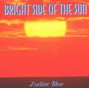

| Artist: | Zodiac Blue |
| Title: | Bright Side Of The Sun |
| Label: | Zap Pow Records 5D041 |
| Length(s): | 44 minutes |
| Year(s) of release: | 1995 |
| Month of review: | [11/2001] |
| 1) | Rise | 1.27 |
| 2) | Dream | 3.39 |
| 3) | Transit | 1.55 |
| 4) | Precious Intro | 0.36 |
| 5) | Precious Moments | 5.31 |
| 6) | Reprise (dream) | 3.09 |
| 7) | Light At The End Of The The Tunnel | 6.30 |
| 8) | ?? | 0.18 |
| 9) | Credit | 4.31 |
| 10) | We The People | 5.56 |
| 11) | Cloudy | 4.52 |
| 12) | New Light | 6.06 |
A short spoken word passage opens the more psychedelic Transit. The music is again calm and soothing and features a grumbling organ in the back. After a short intro Precious is more of AOR or pop. Not bad but not good either.
The Reprise of Dream features both sax and a moody ending using keyboards. The chords are quite heavy on this track.
Of course a companion to Dark Side Of The Moon can not exist without a track similar to Great Gig In The Sky. Light At The End Of The Tunnel is that track. The male vocals on this track harken back to the dreary ones of Flash And The Pan. The female vocals work as an antidote. A good track with an especially strong ending.
Credit is the Money variant. I have never really liked that track, so it is not surprising that I am not that fond of this one either. The blues component is again quite strong. Martin Luther King opens on We The People. The guitar is typically Floydian, but the track itself is rather poppy. Lots of spacey keys, a strong vocal part (again quite a bit of female backing vocals) and overall very accessible. The mood continues to be very Floydian nonetheless.
Cloudy is by contrast very introspective. A meandering sax, light percussion and a bluesy guitar solo supported by a good melody. The final track is the most optimistic of them all and mostly iterates the rest of the album.